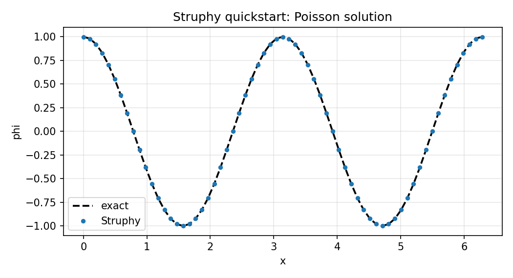

Quickstart#
Struphy is a Python API for solving PDEs with structure-preserving discretizations. This quickstart shows how to solve a simple problem with minimal input: a 1D Poisson solve.
For interactive tutorials (no local install), use mybinder. For more examples, see Userguide and the tutorial collection.
Solve Poisson In A Few Steps#
Make sure that Struphy is installed and compiled (see Install and compile).
We search for a potential \(\phi(x)\) satisfying the Poisson equation
for given source term \(\rho(x)\) on a periodic 1D domain.
Import the API and choose a model.
from struphy import Simulation, domains, grids, perturbations
from struphy.models import Poisson
Create the
Poissonmodel.
model = Poisson()
3. This model features the Propagator PoissonSolve under propagators.poisson.
Connect the source variable of species em_fields to the propagator and stabilize via options.
stab_eps = 1e-8
model.propagators.poisson.options = model.propagators.poisson.Options(
rho=model.em_fields.source,
stab_eps=stab_eps,
)
Add a manufactured term \(\rho(x) = (k^2 + \epsilon)\cos(kx)\) to the
sourcevariable.
import numpy as np
Lx = 2.0 * np.pi
mode = 2
k = mode * 2.0 * np.pi / Lx
source_amp = k**2 + stab_eps
fun = perturbations.ModesCos(ls=(mode,), amps=(source_amp,))
model.em_fields.source.add_perturbation(fun)
Build domain and grid, then instantiate a simulation.
domain = domains.Cuboid(l1=0.0, r1=Lx)
grid = grids.TensorProductGrid(num_elements=(64, 1, 1))
sim = Simulation(
model=model,
domain=domain,
grid=grid,
)
Run one step (enough for this stationary solve).
sim.run(one_time_step=True)
Post-process and load plotting data.
sim.pproc()
sim.load_plotting_data()
Compare to the exact solution, and save the figure.
import matplotlib.pyplot as plt
x = sim.grids_phy[0][:, 0, 0]
t_last = max(sim.spline_values.em_fields.phi_log.data)
phi_num = sim.spline_values.em_fields.phi_log.data[t_last][0][:, 0, 0]
phi_exact = np.cos(k * x)
err_max = np.max(np.abs(phi_num - phi_exact))
plt.figure(figsize=(7, 3.8))
plt.plot(x, phi_exact, "k--", lw=1.8, label="exact")
plt.plot(x, phi_num, "o", ms=3.5, label="Struphy")
plt.xlabel("x")
plt.ylabel("phi")
plt.title("Struphy quickstart: Poisson solution")
plt.legend()
plt.grid(alpha=0.3)
plt.tight_layout()
plt.savefig("quickstart_poisson_phi.png", dpi=150)
plt.show()
print(f"max error = {err_max:.3e}")

Exact (dashed) and Struphy (markers) solutions from Step 6.#
Full copy-paste script:
import numpy as np
from struphy import Simulation, domains, grids, perturbations
from struphy.models import Poisson
model = Poisson()
stab_eps = 1e-8
model.propagators.poisson.options = model.propagators.poisson.Options(
rho=model.em_fields.source,
stab_eps=stab_eps,
)
Lx = 2.0 * np.pi
mode = 2
k = mode * 2.0 * np.pi / Lx
source_amp = k**2 + stab_eps
fun = perturbations.ModesCos(ls=(mode,), amps=(source_amp,))
model.em_fields.source.add_perturbation(fun)
domain = domains.Cuboid(l1=0.0, r1=Lx)
grid = grids.TensorProductGrid(num_elements=(64, 1, 1))
sim = Simulation(model=model, domain=domain, grid=grid)
sim.run(one_time_step=True)
sim.pproc()
sim.load_plotting_data()
x = sim.grids_phy[0][:, 0, 0]
t_last = max(sim.spline_values.em_fields.phi_log.data)
phi_num = sim.spline_values.em_fields.phi_log.data[t_last][0][:, 0, 0]
phi_exact = np.cos(k * x)
import matplotlib.pyplot as plt
plt.figure(figsize=(7, 3.8))
plt.plot(x, phi_exact, "k--", lw=1.8, label="exact")
plt.plot(x, phi_num, "o", ms=3.5, label="Struphy")
plt.xlabel("x")
plt.ylabel("phi")
plt.title("Struphy quickstart: Poisson solution")
plt.legend()
plt.grid(alpha=0.3)
plt.tight_layout()
plt.savefig("quickstart_poisson_phi.png", dpi=150)
plt.show()
Same Workflow For All Models#
The same Simulation API is reused across models. For example, replace Poisson with Maxwell:
from struphy import Simulation, perturbations
from struphy.models import Maxwell
model = Maxwell()
model.em_fields.e_field.add_perturbation(
perturbations.ModesCos(ls=(1,), amps=(1e-2,), comp=1)
)
sim = Simulation(model=model)
sim.run()
Check Models for more models and their specific options.
Generate A Default Parameter File#
You can generate a ready-to-edit parameter file for any model from the CLI:
struphy params Poisson
This writes params_Poisson.py in your current directory. You can open and edit it, then run with:
python params_Poisson.py
As all data structures in Struphy are written for MPI, you can run the same script with mpirun to use multiple processes:
mpirun -n 4 python params_Poisson.py